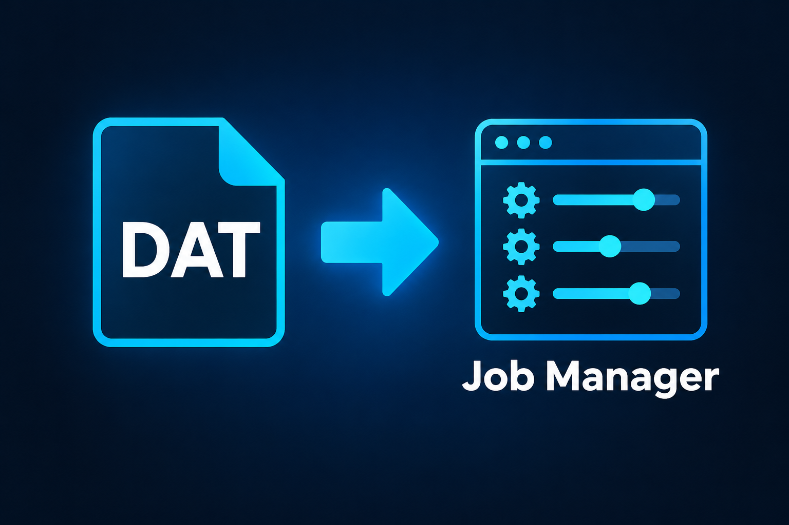

Available · v2.1
DAT to Job Manager Converter
Convert legacy Epilog Laser DAT files to Job Manager. An independent utility for Epilog Laser users, free for Windows 10 and 11, available in 9 languages. No installation required.
Explore the software →